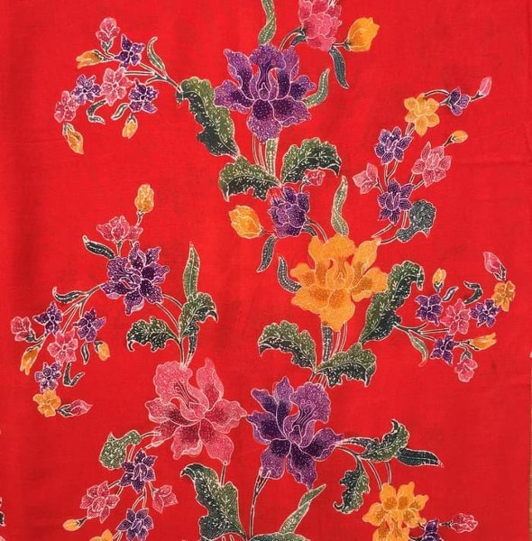

Batik adalah kerajinan yang memiliki nilai seni tinggi dan telah menjadi bagian dari budaya Indonesia sejak lama. Perempuan-perempuan Jawa pada masa lampau menjadikan keterampilan mereka dalam membatik sebagai mata pencaharian, sehingga pada masa lalu pekerjaan membatik adalah pekerjaan eksklusif perempuan sampai ditemukannya "Batik Cap" yang memungkinkan masuknya laki-laki ke dalam bidang ini.
Ada beberapa pengecualian bagi fenomena ini, yaitu batik pesisir yang memiliki garis maskulin seperti yang bisa dilihat pada corak "Simbut", di mana di beberapa daerah pesisir pekerjaan membatik adalah lazim bagi kaum lelaki.Tradisi membatik pada mulanya merupakan tradisi yang turun temurun, sehingga kadang kala suatu motif dapat dikenali berasal dari batik keluarga tertentu.
Beberapa motif batik dapat menunjukkan status seseorang. Bahkan sampai saat ini, beberapa motif batik tadisional hanya dipakai oleh keluarga keraton Yogyakarta dan Surakarta.Batik merupakan warisan nenek moyang Indonesia yang sampai saat ini masih ada.
pertama kali diperkenalkan kepada dunia oleh Presiden Soeharto, yang pada waktu itu memakai batik pada Konferensi PBB.
